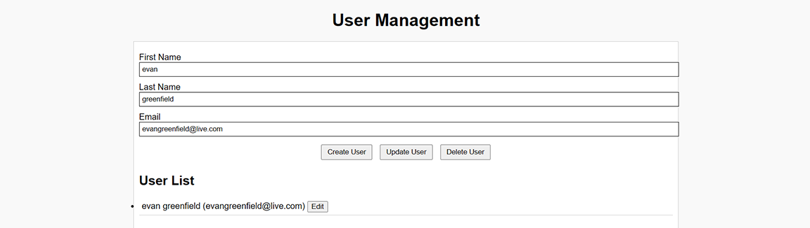
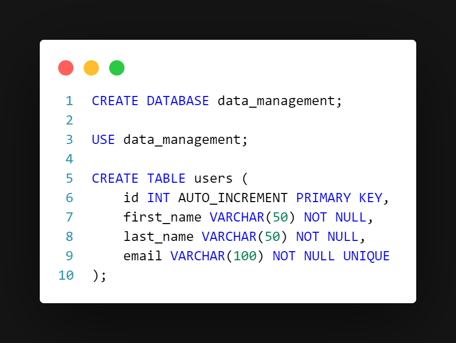
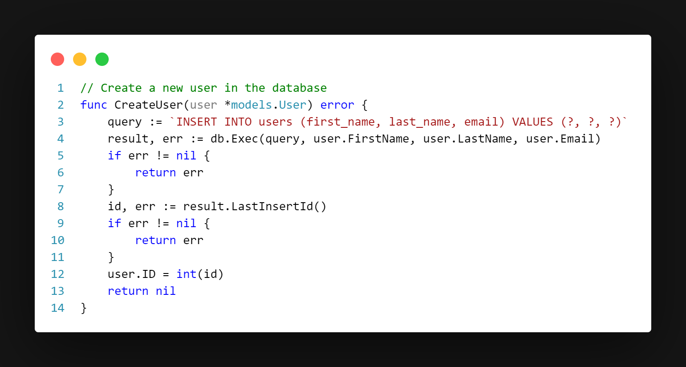
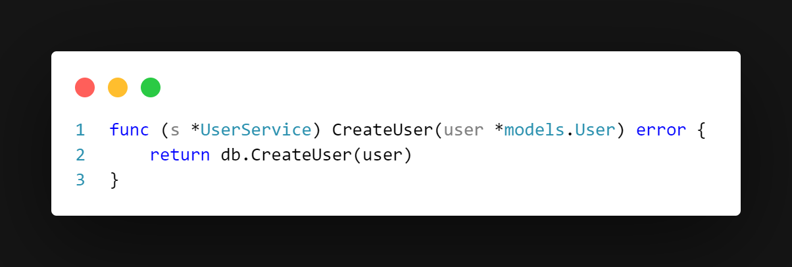
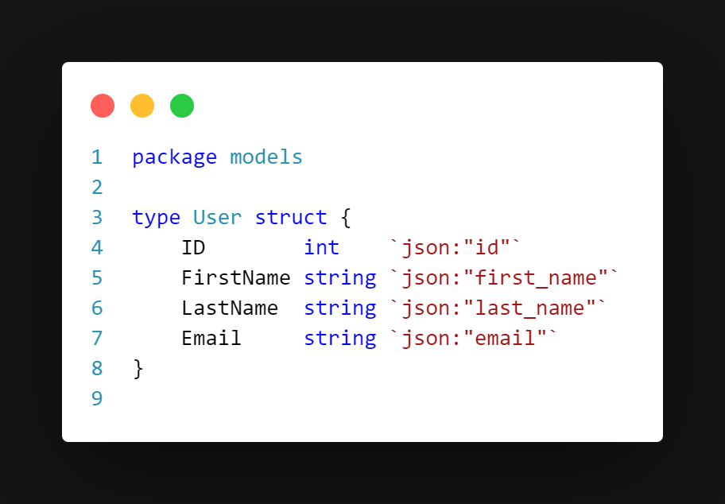
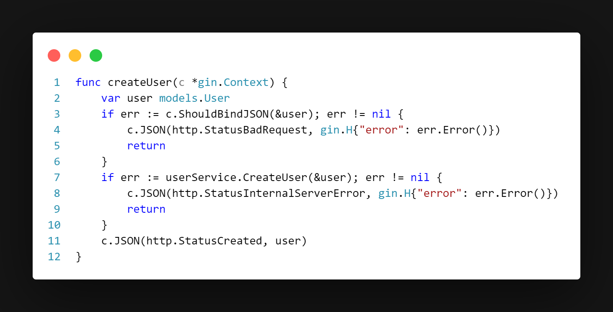
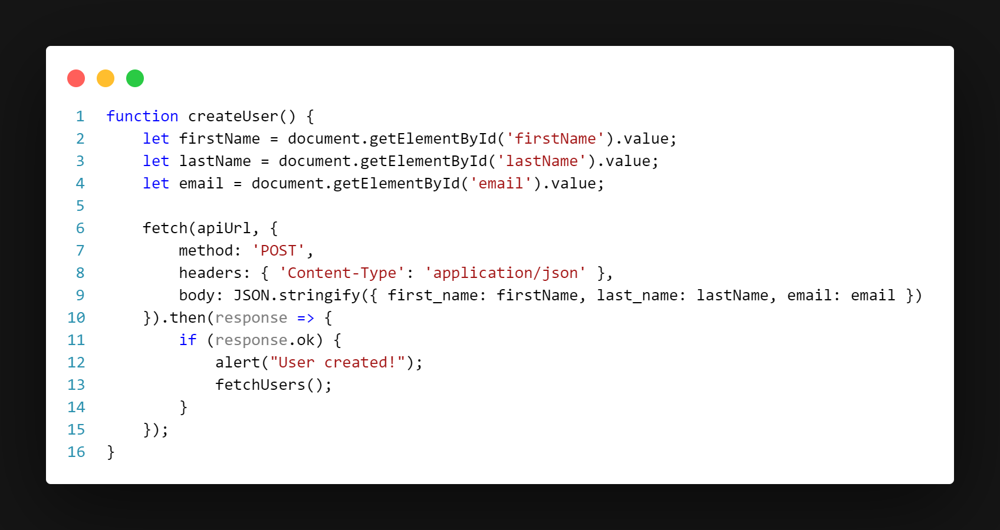

GoLang Data Management Application
A user management system built with Go and MySQL that performs CRUD actions on a user database from a web front-end.

How it's put together
The database schema lives in MySQL. I used MySQL Workbench for this project to make it easier to monitor table rows.

Go's MySQL driver powers the CRUD functions on the Go side.

Those functions are called inside the user_service file, which acts as the middle-man between the database and the User structure.


The user_handler calls the service layer and handles the HTTP request to create a new user in the web application.

Finally, those endpoints are called by button press in the HTML front-end.
